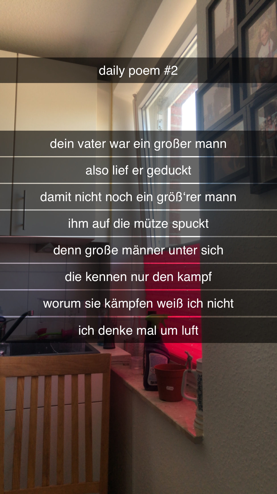

Dein Vater war ein großer Mann
[2]Dein Vater war ein großer Mann,
Also lief er geduckt –
Damit nicht noch ein größ'rer Mann
Ihm auf die Mütze spuckt;
Denn große Männer unter sich,
Die kennen nur den Kampf –
Worum sie kämpfen, weiß ich nicht –
Ich denke mal um Luft.
